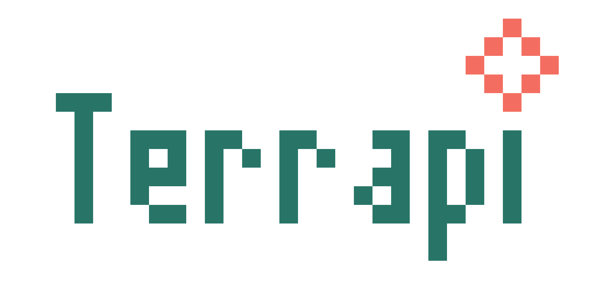
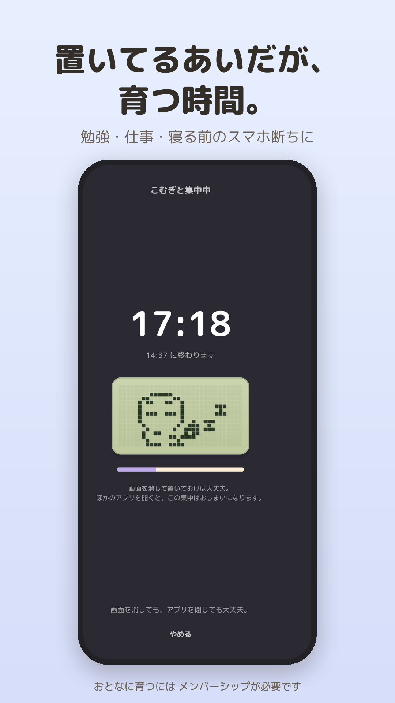
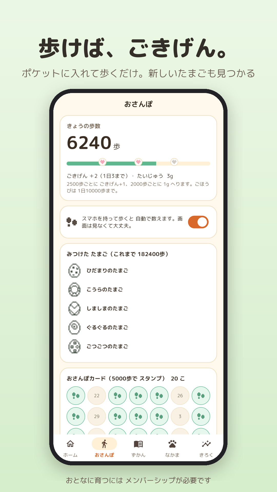
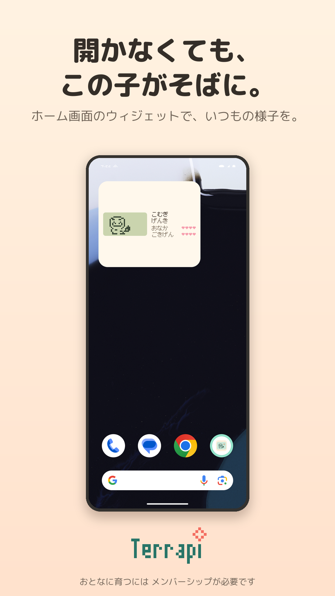

15 MIN
01 / はじめの一歩
まずは15分、置いてみる。
勉強、仕事、読書の前にタイマーをスタート。最初の15分の集中で、たまごがかえります。

テラピ画面の外に、いい時間を。
読みかけの本。目の前の勉強。
あなたが自分の時間を過ごすあいだ、
この子も、少しずつ大きくなる。
集中タイマー × ドット絵の爬虫類育成
こどもまで無料で育成・アプリ内課金あり
キャラクターのイメージ・サイト内のデモです
LITTLE BY LITTLE
我慢だけで続けるのは、ちょっとむずかしい。
だから、スマホを置いた先に、小さな楽しみを。
01 / はじめの一歩
勉強、仕事、読書の前にタイマーをスタート。最初の15分の集中で、たまごがかえります。
02 / おかえりの時間
ごはんをあげて、なでて、ごきげんに。朝と夜にちょっとのぞく、無理のないお付き合い。
03 / 日々が、成長に
集中した時間と、一緒に過ごした日々で成長。お世話のしかたやおさんぽで、育つ種類が変わります。
MEET YOUR LITTLE FRIENDS
レオパ、リクガメ、ボールパイソン。
実在する 30種類 の爬虫類が、
愛嬌たっぷりのドット絵になりました。
ヤモリの6種類を表示
どの種類に育つかは、あかちゃんのころの過ごし方しだい。
おとなへの成長・次の相棒のお迎えにはメンバーシップが必要です。
A LITTLE MORE OFFLINE
5・15・25・45分から選べるタイマー。机に向かう日も、本を読む日も。積み重ねた時間が、相棒の成長につながります。

スマホを持って、おさんぽへ。歩くと相棒のごきげんがアップ。歩数を重ねれば、新しいたまごとの出会いも。

ホーム画面のウィジェットに、小さな相棒。アプリを開かずに様子を見られるから、自分の時間にすっと戻れます。

画像は掲載用データを使ったアプリ画面です。表示は端末やOSにより異なります。歩数機能には端末の許可が必要です。
AT YOUR OWN PACE
忙しい日も、ちょっと忘れる日もあるから。
この子が死んでしまうことはありません。
完璧なお世話よりも、あなたのペースを大切に。
月額・年額・買い切りから選べます。価格と無料体験の対象条件はアプリの購入画面でご確認ください。
GOOD TO KNOW
お世話は朝と夜に少しのぞくくらいで大丈夫。通知で呼び戻すこともありません。成長には集中した時間と日数が必要なので、お世話を楽しんだら、またスマホを置いて自分の時間へ。
お世話のしかたによって、育つ種類や表情が変わります。おなかがすいたり、ごきげんが下がったりすることはありますが、相棒が死んでしまうことはありません。
たまごからこどもまでの育成と、集中タイマーが無料で使えます。おとなへの成長、次の相棒のお迎え、画面の色の着せかえにはメンバーシップが必要です。広告とガチャはありません。
消えません。おとなの相棒は「おやすみ中」になり、会いに来てなでることができます。こどもの相棒はそのまま暮らし続け、集中タイマーも使えます。月額・年額の自動更新はストアのアカウント設定から解約できます。
iPhoneとAndroid向けに配信準備中です。配信開始後、このページから各ストアへ進めるようになります。発売日はまだお知らせしていません。
LESS SCREEN. MORE LITTLE MOMENTS.
自分のための時間が、相棒との日々になる。
Terrapiで、小さな暮らしをはじめよう。
配信開始後、こちらにダウンロードリンクを掲載します。
こどもまで無料で育成・アプリ内課金あり